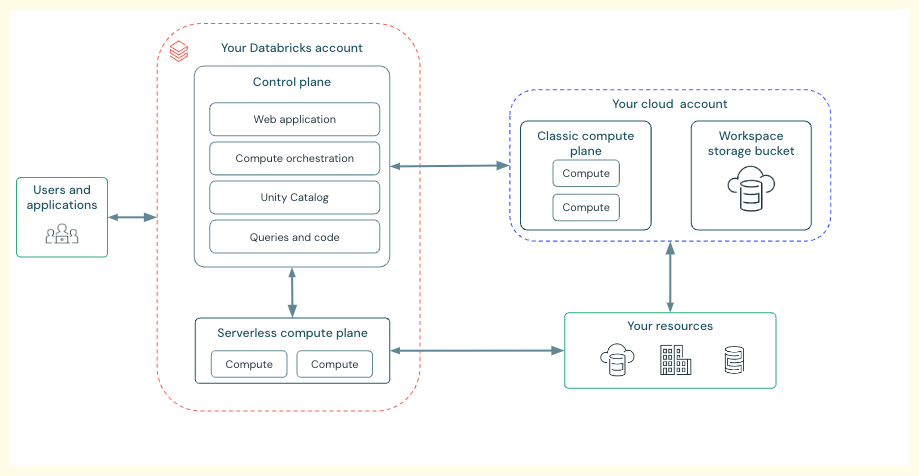

Overview
Challenges in a Normal Day-to-Day Data Platform#
-
Too Many Tools and Integration Issues:
Organizations often use a multitude of separate tools for different tasks, such as data warehousing, ETL (Extract, Transform, Load), running Spark jobs, saving data to data lakes, orchestration, AI/ML solutions, and BI (Business Intelligence) reporting.
Each of these tools needs to integrate properly with one another to function effectively. For instance, if a BI dashboard doesn't integrate with a data warehousing solution, proper results cannot be obtained.
Furthermore, governance (handling security, lineage, and metadata) must work across all these tools; otherwise, data leaks and security issues can arise. The complexity and challenges increase significantly when dealing with numerous individual tools.
-
Proprietary Solutions or Vendor Lock-in:
Many data warehousing solutions are proprietary, meaning they require data to be stored in their specific, encoded format. This creates a vendor lock-in, preventing direct communication with or extraction of data without using the vendor's data engine. If the vendor's solution is not used, accessing and reading the data becomes impossible.
Databricks addresses this by providing open-source solutions. Data can reside in an organization's data cloud platform in open-source formats like Parquet, CSV, or Avro.
On top of this, Databricks uses an open-source data engine called Delta Lake, which communicates with the data. This allows users the freedom to switch vendors if desired, as their data remains accessible in an open format within their data lake, ensuring no vendor lock-in.
-
Data Silos:
Traditional platforms often have separate data lakes (used for AI/ML solutions and ETL jobs) and data warehousing solutions (used by BI tools). This leads to duplicate copies of data. Data is often moved from the data lake to populate a separate data warehouse, resulting in the same data existing in different places, possibly with different owners.
Maintaining multiple copies by different owners is a significant challenge. Databricks tackles this by merging the data lake and data warehouse into a Data Lakehouse
The Data Lakehouse Solution and Delta Lake
The Data Lakehouse is essentially a combination of a data lake and a data warehouse. With a Data Lakehouse, data remains in the data lake in open formats (e.g., Parquet, CSV). On top of this data, an engine called Delta Lake communicates with the data lake to provide the functionalities of a Data Lakehouse.
Delta Lake provides properties similar to RDBMS systems, including:
- ACID transactions (Atomicity, Consistency, Isolation, Durability).
- Versioning of data.
- Transaction logs.
- Ability to restore data from different versions.
- Audit history.
This means a single copy of data in the data lake can serve both AI/ML purposes and BI purposes, eliminating the need to move data to proprietary data warehousing solutions. This is the core benefit of the Data Lakehouse: combining the advantages of both data warehousing and data lake on the same platform. In Databricks, the Data Lakehouse is powered by Delta Lake, an open-source solution.
Databricks Lakehouse Platform Architecture

The Databricks Lakehouse platform is built in layers:
- Bottom Layer - Cloud and Data Storage: Users can utilize any major cloud provider: Azure, GCP, or AWS. Data is stored in the data lake within the chosen cloud provider.
- Data Lakehouse Engine - Delta Lake: Delta Lake sits on top of the data lake and is the core functionality that empowers the Data Lakehouse.
- Unified Governance - Unity Catalog: Databricks provides another open solution called Unity Catalog for unified governance, handling security, lineage, and metadata across the platform.
- Data Intelligence Engine: Built on top of the Data Lakehouse, this engine is governed by Unity Catalog and provides insights from data. This makes Databricks a data intelligence platform.
-
Top Layer - Personas and Tools: The platform provides tools for all three key personas:
Data Engineering: Uses jobs, workflows, notebooks, and Spark scripts.
Data Analysts: Utilize Databricks SQL and dashboards.
Data Scientists: Have access to AI/ML solutions provided by Databricks.
Databricks Data Intelligence Platform
The Databricks Data Intelligence Platform is defined as Data Lakehouse plus Generative AI. Generative AI provides the platform with its power for natural language and allows enterprises to gain insights from their enterprise data. Therefore, Databricks is called a data intelligence platform because it combines the benefits of a Data Lakehouse with Generative AI capabilities.
-------------------------------------------------------------------------------------------------------------
What is Databricks?#
Databricks is a cloud-based platform built on Apache Spark that provides a collaborative environment for big data processing and analytics. It offers an integrated workspace where data engineers, data scientists, and analysts can work together to leverage the power of Spark for various use cases.
Databricks is important because it makes it easier to use a Apache Spark. Instead of having to worry about all the technical stuff behind the scenes, Databricks gives you a simple and friendly way to use Spark. It takes care of all the complicated setup and management stuff so that you can focus on working with your data and doing cool analytics tasks. It’s like having a magic helper that takes care of the boring stuff, so you can have more fun exploring and analyzing your data.
-------------------------------------------------------------------------------------------------------------
Architecture#

Working with Databricks – Initial Setup
-
Cloud Providers: To work with Databricks, users can choose any of three major cloud providers: AWS, Azure, or GCP. If an organization already has a preferred cloud partner, they can use Databricks with that same partner.
-
Databricks Account: The first step is to create a Databricks account.
-
Workspaces: Once an account is created, users can then create one or more workspaces. A single Databricks account can manage multiple workspaces. For example, an account can have separate workspaces for development (Dev), user acceptance testing (UAT), and production (Prod) environments. This allows for segregation of different workspaces and assignment of different permissions to various users. All work, including writing code, creating clusters, and working with data, is done within these workspaces.
-
Account-Level Management: At the account level, various administrative tasks can be performed, such as: Creating metastores and assigning them to different workspaces. Assigning users to different workspaces. Managing groups or service principals. These elements can be managed at the account level and assigned to workspaces as per requirements. An account can be used to create and manage multiple workspaces, including new ones if needed later (e.g., for pre-production).
Workspace URLs
When a new workspace is created, it gets a unique Workspace ID (a number).
A web URL is generated for the workspace, which users access to work within Databricks. These URLs often follow patterns like https://adb-
All users connect to this web URL to perform their tasks, regardless of their persona (Data Engineering, Data Analytics, or Data Scientist). Access to these URLs can be managed at the account level by assigning specific users to different workspaces.
High-Level Architecture of Databricks
The high-level architecture of Databricks consists of two main parts:
-
Control Plane: The control plane is managed by Databricks and resides within the Databricks cloud account. Its primary purpose is to manage Databricks' backend services. It manages the web application used to interact with the workspace. It also handles information like notebook configurations, cluster configurations, job information, and logs required to manage the data plane. The main purpose of the control plane is to orchestrate and provide configurations necessary to run jobs, clusters, and code.
-
Data Plane: The data plane resides within the customer's cloud account. This is where customer data is processed. Client data always resides in the customer's cloud account within the data plane, never at the control plane. Clusters created to process this data are also created and run within the customer's cloud account (data plane). These clusters are managed by configurations from the control plane. Processed data is saved back to the client's cloud account only. There is no data movement to the control plane; configurations and access are managed by the control plane, but data remains in the data plane. If a cluster needs to connect to external data sources (e.g., MySQL, a different data lake), it will connect and process that data within the data plane.
Roles in Databricks
There are four major roles involved in a Databricks platform:
-
Account Administrator: Main tasks include creating workspaces. Works with metastores. Responsible for user management and assigning permissions to users for different workspaces. These are the three major tasks, among others.
-
Metastore Administrator: Main purpose is to create catalogs and manage data objects. (Catalogs will be discussed in upcoming sessions). Can delegate required privileges to different users or owners.
-
Workspace Administrator: This role is the administrator at the workspace level, similar to how an account administrator is at the account level. Manages users at the workspace level. Manages workspace assets. Decides the privileges for workspace assets.
-
Owner: An owner is the user who creates an object (e.g., a table, a schema). The owner of an object can delegate permissions for that object to different users.
While these roles might seem confusing initially, their responsibilities will be demonstrated with live examples in upcoming sessions
Databricks Account Console Overview
The Account Console is where users can manage their Databricks account and associated workspaces from a single place. This is particularly useful for organizations with many workspaces (e.g., 50-60), as it simplifies management.
Features and Settings in the Account Console
-
Workspace Management: The Account Console displays workspaces tied to the account, such as the one created in the previous video. Users can click on a workspace to view its settings. Security and Compliance: Within the workspace settings, specific security and compliance measures can be applied to that workspace. Configuration and Permissions (Unity Catalog): Once Unity Catalog is enabled, a "permissions" tab becomes active. From here, specific users, groups, or service principals can be granted access to that particular workspace. This tab allows for controlling access to each workspace.
-
Catalog: This tab is used to create metastores. A metastore is the top-level container for Unity Catalog. To enable Unity Catalog, a metastore must first be created. The creation of a metastore will be covered in a subsequent video.
-
User Management (Most Important Tab):
This section allows for managing users, service principals, and groups. Users: Users created in Azure Entra ID (or equivalent identity provider for other clouds) are listed here. For each user, different roles can be defined. For example, a user can be enabled or disabled as an Account Admin or Marketplace Admin. Only Account Admins have the privileges to manage users from the Account Console. Service Principals: These are referred to as robot accounts, meaning they act as a user and can perform jobs on behalf of a user. It is considered best practice to use service principals, not user accounts, for running jobs in a production environment (e.g., if a user leaves the organization). Service principals can be configured from this tab. Groups: Users can create new groups to segregate different users and provide varying privileges. Example: An organization might have HR and normal employee groups. HR may have elevated privileges (e.g., viewing salary) that normal employees do not. Once a group is created, users or service principals can be assigned to it. Granting privileges to a group means all members (users and service principals) of that group automatically receive those roles or responsibilities. Groups simplify management, making it easier to assign permissions to a group rather than to individual users.
-
Network Connectivity Configurations (NCC): This tab is used to add configurations for securely connecting to Azure services that cannot be directly connected with Databricks. NCC helps establish secure connections for such services.
-
Previews: Databricks offers a look and feel of upcoming features. Users can enable or disable these preview features from this tab.
-
Settings: This section contains various settings, but the video focuses on Feature Enablement. Feature Enablement: Some features are enabled or disabled by default for the account. Serverless Compute for Workflow, Notebooks, and DLT (Delta Live Tables) is a new feature that is disabled by default. If a workspace needs to access serverless compute for its workflows, notebooks, or DLT, it must be enabled from the Account Console. Once enabled at the account level, all workspaces under that account will have access to this serverless compute. This will be enabled when serverless features are discussed later in the course. Other features can also be enabled or disabled at the account level for all workspaces
-------------------------------------------------------------------------------------------------------------
Databricks Components#
Databricks is composed of several main components that work together to provide a comprehensive data analytics and AI platform:
- Apache Spark: At its core, Databricks is built on Apache Spark, a powerful open-source, distributed computing system that provides fast data processing and analytics capabilities. Databricks enhances Spark with optimized performance and additional features.
- Databricks Workspace: This is a collaborative environment where data scientists, data engineers, and analysts can work together. It includes interactive notebooks (supporting languages like Python, Scala, SQL, and R), dashboards, and APIs for collaborative development and data exploration.
- Databricks Runtime: A performance-optimized version of Apache Spark with enhancements for reliability and performance, including optimizations for cloud environments and additional data sources.
- Delta Lake: An open-source storage layer that brings reliability to Data Lakes. Delta Lake provides ACID transactions, scalable metadata handling, and unifies streaming and batch data processing.
- Workflow: Databricks Workflows simplify job orchestration, allowing you to create, schedule, and manage data pipelines using a no-code or low-code interface. They support tasks like ETL, machine learning, and batch or streaming workflows, ensuring seamless integration with Databricks Jobs and other tools.
- Databricks SQL: A feature for running SQL queries on your data lakes. It provides a simple way for analysts and data scientists to query big data using SQL, visualize results, and share insights.
- SQL Warehouses: Databricks SQL Warehouse is a scalable, cloud-native data warehouse that supports high-performance SQL queries on your data lake. It enables analytics and BI reporting with integrated tools like Power BI and Tableau, ensuring fast, cost-efficient query execution with fully managed infrastructure.
- Catalog: Databricks Catalog provides centralized governance, organizing your data and metadata.
- Data Integration Tools: These allow for easy integration with various data sources, enabling users to import data from different storage systems.
- Cluster Management: Databricks allows for easy management of Apache Spark clusters, automating their deployment, scaling, and maintenance. Users can quickly start clusters and adjust their size according to the workload requirements.
- Delta Live Tables: They simplify ETL with declarative pipelines, ensuring data quality with built-in validation and real-time monitoring. DLT leverages Delta Lake for incremental processing, making pipelines efficient and reliable.
-------------------------------------------------------------------------------------------------------------
What are Deletion Vectors? • In a typical Delta table scenario, when you modify or delete even a single row in a Parquet file, the entire file has to be rewritten. This can be inefficient, especially with files containing millions of records, creating an optimization issue. • Deletion Vectors offer a solution to this problem. When a table has deletion vectors enabled, instead of rewriting the file, a deleted row is simply marked with a vector or a flag indicating it has been deleted. • When you read data from the table, the query engine will only process the rows that have not been flagged for deletion. • The actual removal of these flagged rows occurs during a maintenance operation, such as running the OPTIMIZE command. This process rewrites the Parquet file, permanently removing the rows marked for deletion. Practical Demonstration of Deletion Vectors The video demonstrates this concept using a Databricks notebook. 1. Reading Data and Creating a Table: ◦ A sample sales CSV file is read using the read_files utility in SQL. ◦ A Delta table named dev.bronze.sales is created from this data using a CREATE TABLE AS SELECT (CTAS) command. 2. Checking Table Properties: ◦ Using the DESCRIBE EXTENDED command on the newly created table reveals its metadata. ◦ By default, the table property delta.enableDeletionVectors is set to true, meaning deletion vectors are enabled. 3. Deleting Data with Deletion Vectors Disabled: ◦ To show the traditional behavior, deletion vectors are first disabled using the ALTER TABLE command: ◦ A DELETE statement is executed to remove all records with a specific InvoiceNo. ◦ The DESCRIBE HISTORY command is then used to inspect the transaction log. The history shows: ▪ Files were rewritten: two files were removed and one new file was added. ▪ The operation metrics confirm that numDeletionVectorsAdded is zero, as the feature was turned off. 4. Deleting Data with Deletion Vectors Enabled: ◦ The feature is re-enabled for the table by setting delta.enableDeletionVectors back to true. ◦ Another DELETE operation is performed for a different InvoiceNo. ◦ Viewing the table history again shows a different outcome: ▪ No files were removed or added (numFilesAdded is zero). ▪ Instead, the operation metrics show that deletion vectors were added for the four deleted rows. ▪ This confirms that the data file was not rewritten; the rows were simply flagged for deletion. 5. Prerequisites: ◦ To use deletion vectors, you need Delta Lake version 2.3.0 or higher. ◦ If using Databricks, the runtime must be 12.2 LTS or higher.
Part 2: Liquid Clustering What is Liquid Clustering? • Traditional optimization techniques like partitioning and Z-ordering require rewriting the entire table to apply the optimization. • Liquid Clustering is a newer Delta Lake feature that avoids this full table rewrite. When you enable clustering on a column, new or incremental data is automatically and efficiently adjusted according to the clustering key. • Delta Lake automatically handles the repartitioning and file sizes for the specified clusters. When to Use Liquid Clustering Liquid clustering is recommended in several scenarios: • Tables with high-cardinality columns that are frequently used in query filters. • Data with significant skew. • Tables where data grows very quickly. • When there are varied or changing data access patterns. • For tables that are over-partitioned or under-partitioned. Practical Demonstration of Liquid Clustering 1. Prerequisites: ◦ Liquid clustering requires Delta Lake version 3.1.0 or higher. ◦ In Databricks, the runtime version must be 13.3 LTS or higher. 2. Enabling Liquid Clustering on an Existing Table: ◦ You can enable clustering on an existing table using the ALTER TABLE command with the CLUSTER BY clause. ◦ Example: ALTER TABLE dev.bronze.sales CLUSTER BY (InvoiceNo). ◦ The table history will show that the clustering column has been set. The process also upgrades some table protocols automatically. 3. Creating a New Table with Liquid Clustering: ◦ When creating a new table, you can define clustering columns directly in the CREATE TABLE statement. ◦ Example: ◦ DESCRIBE EXTENDED on this new table will list InvoiceNo under "Clustering Columns". 4. Important Limitation: ◦ A column chosen for clustering must be within the first 32 columns of the Delta table. 5. Benefits in Practice: ◦ Once enabled, you only need to ensure your queries use the clustering column in filter predicates (WHERE clauses) to see performance benefits. ◦ A major advantage is that no manual maintenance is needed for incremental data loads; new data is automatically clustered, ensuring sustained query performance
Introduction to Volumes in Databricks • Purpose: Volumes are a feature in Databricks Unity Catalog designed to store and govern unstructured, semi-structured, or structured data files. While Delta tables are used for tabular data, volumes handle other types of files. • Governance: Because volumes exist within the Unity Catalog's catalog.schema hierarchy, they can be governed using Unity Catalog's features, just like tables. • Prerequisites: ◦ Unity Catalog must be enabled in your Databricks workspace. ◦ You must use a Databricks runtime version of 13.3 LTS or higher.
Part 1: Managed Volumes
A managed volume is one where Unity Catalog controls both the metadata and the physical storage location of the files.
Creating a Managed Volume
1. SQL Command: You can create a managed volume using the CREATE VOLUME command.
2. Naming Convention: You must use a three-level namespace: catalog.schema.volume_name.
3. Location: For a managed volume, you do not specify a storage location. Unity Catalog automatically manages this, storing the data in a default location determined by the metastore, catalog, or schema settings.
Example Command:
CREATE VOLUME dev.bronze.managed_volume
COMMENT 'This is a managed volume';
After running the command, the new volume will appear in the Catalog Explorer under the specified schema, separate from the tables.
Inspecting a Managed Volume
You can view details about a volume using the DESCRIBE VOLUME command. This command provides information such as:
• Catalog and schema (database) name.
• Owner.
• Physical storage location (which will be under a metastore-managed path).
• Volume type, which will be listed as MANAGED.
Working with Files in a Managed Volume
You can use dbutils commands within Python or shell magic commands to manage files and directories inside a volume.
1. Downloading a File: The video demonstrates downloading an EMP.csv file from the internet to the local driver file system using the %sh wget command.
2. Creating a Directory: You can create a directory inside the volume using dbutils.fs.mkdirs().
◦ Path Syntax: When accessing volumes in Python or shell commands, you must use the specific path format: /volumes/
Part 2: External Volumes An external volume is one where you specify the physical storage location in your cloud storage (like Azure Data Lake Storage), and Unity Catalog only manages the metadata associated with it. Creating an External Volume 1. Prerequisite: External Location: Before creating an external volume, you must have an External Location configured in Unity Catalog. This involves: ◦ Creating a directory in your cloud storage account (e.g., a folder in an Azure container). ◦ Creating an External Location in Databricks that points to this directory and uses a Storage Credential for access. You can test the connection to ensure permissions are correctly set up. 2. SQL Command: Use the CREATE EXTERNAL VOLUME command. 3. Location Clause: You must provide the path to your pre-configured External Location using the LOCATION clause. Example Command: CREATE EXTERNAL VOLUME dev.bronze.external_volume COMMENT 'This is an external volume' LOCATION 'abfss://data@adbewithdata01.dfs.core.windows.net/adb/EXT_volume'; After creation, you can work with files in an external volume the same way you do with managed volumes (creating directories, copying files). The files will physically reside in the specified external cloud storage location.
Reading Data from Volumes
You can directly query files stored within a volume using SQL. The syntax requires specifying the file format (e.g., csv) followed by the path to the file within the volume.
Example Query:
SELECT * FROM csv./volumes/dev/bronze/managed_volume/files/EMP.csv
Note: The path in the SQL query uses a format similar to file system paths, with / separating components, not . as used for table names.
Dropping Volumes
The behavior when dropping a volume differs significantly based on its type.
• Dropping a Managed Volume: When a managed volume is dropped, both the metadata in Unity Catalog and the underlying data files are permanently deleted.
• Dropping an External Volume: When an external volume is dropped, only the metadata in Unity Catalog is removed. The actual data files remain untouched in your external cloud storage location.
Introduction to Databricks Compute • What is Compute? In Databricks, "compute" refers to the data processing capability within your workspace. • What is a Cluster? The term "compute" is often used interchangeably with "cluster". A cluster is a group of machines combined to process and work on your jobs. In a Spark context, a cluster consists of one driver and one or more worker nodes. Types of Compute The video focuses on two primary types of compute available on the "Compute" page in the Databricks workspace sidebar: 1. All-Purpose Compute: Used for interactive tasks like running notebooks or SQL queries manually. 2. Job Compute: Specifically created at runtime for automated jobs and is recommended for this purpose. Creating an All-Purpose Compute Cluster To create an All-Purpose Compute, you navigate to the "Compute" page and click the "Create Compute" button. This opens a configuration page with several options. 1. Cluster Name & Policy • Cluster Name: The first step is to name your cluster. • Policy: Policies are used to define or restrict the way a compute is configured. ◦ Unrestricted: This is the default policy, which allows you to design any type of cluster without limitations. ◦ Predefined Policies: Databricks provides other predefined policies (like Personal Compute, Shared Compute) which are subsets of the "Unrestricted" policy. They autofill certain configurations to simplify setup and enforce restrictions, such as limiting available node types. Custom policies can also be created. 2. Node Configuration • Multi-Node vs. Single-Node: ◦ Multi-Node: A cluster with more than one machine (one driver, multiple workers). ◦ Single-Node: A cluster with only one node, which acts as the driver. Options like autoscaling are not available for single-node clusters. 3. Access Modes This setting determines how users can access the cluster, especially in relation to Unity Catalog. • Single User: ◦ Only one specific user can use the cluster. ◦ It is Unity Catalog enabled. ◦ The user's Azure Active Directory credentials are automatically passed for secure access to Unity Catalog objects. • Shared: ◦ Multiple users with access can use the same cluster. ◦ It is Unity Catalog enabled. • No Isolation Shared: ◦ This is a shared cluster for multiple users but is not supported by Unity Catalog. ◦ It is intended for legacy workloads that run on the Hive metastore. 4. Databricks Runtime (DBR) Version • The DBR is a pre-packaged image containing specific versions of Spark, Scala, Python, necessary libraries, and bug fixes. • It is always recommended to use the latest LTS (Long-Term Support) version available. • You can select different DBRs for standard workloads or Machine Learning (ML) workloads. 5. Photon Acceleration • Photon is a high-performance runtime engine developed by Databricks in C++ that can significantly speed up jobs like data ingestion, ETL, and interactive queries. • Enabling Photon adds a "Photon" tag to the cluster summary and comes with an additional cost, which is reflected in the DBU (Databricks Unit) estimate. 6. Worker and Driver Configuration • VM Type: You can select the virtual machine type for your workers and driver based on your needs, such as general purpose, memory-optimized, or Delta Cache accelerated. Details like memory and core count are provided for each VM type. • Autoscaling: This feature allows the cluster to dynamically scale between a minimum and maximum number of workers. ◦ The cluster starts with the minimum number of workers and scales up as the workload increases, up to the defined maximum. ◦ This is useful when you are unsure of the required resources. ◦ If autoscaling is disabled, the cluster will have a fixed number of workers, resulting in a fixed DBU cost per hour. • Driver Type: You can select the same VM type for the driver as the workers, or choose a different one. 7. Cost-Saving Options • Terminate After: This is a critical cost-saving feature for all-purpose computes. ◦ You can specify a period of inactivity (e.g., 30 minutes) after which the cluster will automatically terminate. 8. Advanced Options • Tags: You can add key-value tags (e.g., owner: ease with data) for cost tracking and organization. • Spark Configs & Environment Variables: These can be passed directly to the cluster during setup. • Logging: Cluster logs can be configured to be saved to a specific DBFS (Databricks File System) path. Managing and Monitoring a Cluster Once a cluster is created, several tabs become available for management and monitoring: • Libraries: You can install libraries (e.g., JAR or Python wheel files) on the cluster. • Event Log: This log shows cluster events, such as the addition or removal of worker nodes when autoscaling is enabled. • Spark UI: Provides access to the traditional Spark UI for debugging jobs and viewing execution details. • Driver Logs: Shows standard out, standard error, and Log4j logs for the cluster's driver node. • Metrics: Displays real-time and historical metrics on CPU utilization, memory usage, and other hardware information to help debug performance. • Notebooks: Shows which notebooks are currently attached to the cluster. Cluster Permissions You can manage who can access the cluster and what they can do. There are three permission levels: • Can Manage: Allows a user to edit, delete, start, and stop the cluster. • Can Restart: Allows a user to only start or stop the cluster, but not edit or delete it. • Can Attach To: The most restrictive level; allows a user only to attach notebooks and run jobs using the cluster. Job Compute vs. All-Purpose Compute • Job Computes are designed specifically for running automated jobs via Databricks Workflows. • They are created on-demand when a job is triggered and automatically shut down once the job completes or fails. • This is the recommended approach for running production jobs as it is more cost-effective. • In contrast, All-Purpose Computes are for interactive analysis and development work
Introduction to Databricks Auto Loader • What is Auto Loader? Auto Loader is a Databricks utility designed to incrementally and efficiently process new files arriving in cloud storage. It can ingest files from various cloud storage providers like AWS, Azure, and GCP, as well as from Databricks File System (DBFS) locations. For the examples in the video, volumes are used as the storage location. • How it Works: Auto Loader provides a structured streaming source called cloudFiles. This makes its implementation very similar to standard structured streaming, using spark.readStream. • Key Benefits: ◦ It supports ingesting data in both streaming and batch modes; you just need to set the trigger accordingly. ◦ It guarantees exactly-once processing of incremental files, preventing data duplication. ◦ It is highly scalable, capable of ingesting millions of files per hour. ◦ It provides robust schema evolution capabilities to handle changes in the structure of incoming files. 2. Initial Setup Before using Auto Loader, the video walks through setting up the necessary directory structures. • Input Data Location: A complex, nested folder structure is created to demonstrate Auto Loader's ability to read from such directories: .../Landing/autoloader_input/year/month/date/. The files for ingestion are placed into the respective date folders. Wildcards (**) are later used in the path to read files from this nested structure. • Checkpoint Location: Auto Loader relies on a checkpoint directory to manage state and track which files have been processed, ensuring incremental and exactly-once ingestion. A separate folder is created for this purpose. 3. File Detection Modes Auto Loader offers two modes to detect new files arriving in the source directory. • Directory Listing (Default Mode): ◦ This is the default mode used by Auto Loader. ◦ It uses API calls to the cloud storage to list files in the source directory and identify new ones. ◦ It manages state within the checkpoint location using a scalable key-value store called RocksDB to ensure exactly-once processing. • File Notification: ◦ This mode uses cloud-native notification and queuing services (e.g., AWS SNS/SQS, Azure Event Grid/Queue Storage). ◦ When a new file arrives, a notification is sent to a queue, which Auto Loader then consumes to discover the new file. ◦ This mode requires elevated cloud privileges because Databricks needs to automatically set up these services in your cloud account. ◦ To enable this mode, you must set the option cloudFiles.useNotifications to true. 4. Implementing Auto Loader The implementation is very similar to a standard Spark Structured Streaming job. • Reading Data: ◦ Use spark.readStream. ◦ Set the format to cloudFiles. ◦ Specify the actual file format (e.g., CSV, JSON) using the option cloudFiles.format. ◦ Provide the path to the input data using .load(). • Key Configuration Options: ◦ pathGlobFilter: Used to specify the file extension, for example, *.csv. ◦ cloudFiles.schemaLocation: This is a crucial option. Auto Loader uses this location to store and evolve the data schema over time. ◦ cloudFiles.schemaHints: A useful option that allows you to specify the data types for certain columns (e.g., quantity Integer, unitPrice Double) without having to define the entire schema. Auto Loader will infer the rest. • Writing Data: ◦ Use the .writeStream method on the DataFrame. ◦ checkpointLocation: Specify the path for the write stream's checkpoint. ◦ trigger(availableNow=True): This trigger processes all available new files in a single batch and then stops the stream, effectively running the stream in batch mode. You can also use other triggers like processingTime for continuous streaming. ◦ toTable(): Saves the output to a Delta table. ◦ option("mergeSchema", "true"): This option is necessary to allow the schema of the target Delta table to evolve if new columns are added by Auto Loader. 5. Schema Evolution Modes Auto Loader provides four modes to handle situations where the schema of incoming files changes. This is configured using the cloudFiles.schemaEvolutionMode option. 1. addNewColumns (Default Mode) ◦ If no mode is specified, this is the default. ◦ When a file with a new column arrives, the stream initially fails. ◦ Upon failure, Auto Loader updates the schema stored in the schemaLocation to include the new column(s). ◦ When you rerun the stream, it will succeed and process the file, adding the new column to the target table (assuming mergeSchema is enabled). 2. rescue ◦ When a file arrives with new columns or mismatched data types, the stream does not fail. ◦ Instead, the "bad" or new data is captured and placed into a JSON blob in a special column named _rescued_data. ◦ This allows the stream to continue uninterrupted while preserving the problematic data for later analysis. 3. failOnNewColumns ◦ As the name suggests, if a new column is detected in a source file, the stream will immediately fail. ◦ You must then manually intervene, either by fixing the source file or updating the schema. 4. none ◦ In this mode, any changes to the schema are completely ignored. ◦ The stream will not fail, but new columns will not be added, and their data will be dropped. Nothing is sent to a rescued data column unless one is manually configured
Introduction to the Medallion Architecture • The Medallion architecture is a multi-hop data architecture designed to logically organize data in a data lakehouse. • It consists of three primary layers: Bronze, Silver, and Gold. • The fundamental principle is that data moves progressively from left to right (from Bronze to Silver, then to Gold), becoming more validated, enriched, and refined with each hop. • This structure improves the overall quality and reliability of the data as it flows through the system. 2. The Bronze Layer (Raw Data) • Purpose: The Bronze layer is the first stop for data entering the lakehouse. Its main function is to capture raw data from various source systems. • Data Sources: It can ingest data from a wide variety of sources, including streaming systems, batch systems, and different file types like CSV, JSON, text, and Parquet. • Data State: The data in the Bronze layer is typically stored "as is," mirroring the source system's structure and content. This raw format is crucial because it ensures the original data is always available for downstream processes to re-consume if needed. • Key Characteristics: ◦ Stores Raw Data: It holds the unprocessed, original data. ◦ Maintains History: The Bronze layer also stores the historical record of the data. ◦ Audit Columns: It is common practice to add audit columns, such as ingestion timestamps, to track when the data was loaded. ◦ Delta Lake Optimization: Storing this data in the Delta Lake format optimizes it for better read performance compared to traditional raw file storage. 3. The Silver Layer (Cleansed & Conformed Data) • Purpose: The Silver layer takes the raw data from the Bronze layer and transforms it into a more reliable and queryable state. • Transformations: This is where data quality improvements are applied. Common operations include: ◦ Filtering data to remove irrelevant records. ◦ Deduplicating records. ◦ Cleaning and refining the data to correct errors or inconsistencies. • Data Enrichment: Data is often enriched in this layer. This can involve joining multiple Bronze tables to create new, more comprehensive tables in the Silver layer. • Key Characteristics: The data in the Silver layer is cleansed, conformed, and ready for more complex business logic and analytics. 4. The Gold Layer (Curated Business-Level Data) • Purpose: The Gold layer is the final and most refined layer, specifically designed to serve business needs and analytics. • Data State: Data in the Gold layer is highly refined and aggregated according to specific business requirements. It represents the "single source of truth" for key business metrics. • Use Cases: This layer serves as the primary endpoint for various consumers: ◦ Analytical Reports and Dashboards. ◦ Artificial Intelligence (AI) and Machine Learning (ML) models. ◦ Data Sharing initiatives. • Key Characteristics: The tables in the Gold layer are often organized in a way that is optimized for reporting and analysis, providing business-level insights. 5. Cross-Cutting Concerns • Data Quality and Governance: It is essential to apply data quality checks and data governance policies throughout all three layers (Bronze, Silver, and Gold) to ensure the integrity and security of the data at every stage of the architecture.
- Introduction to Delta Live Tables (DLT) • What is DLT? Delta Live Tables (DLT) is a declarative framework from Databricks designed to simplify the creation of ETL and data processing pipelines. • Declarative Framework: This means developers only need to focus on writing the data transformations, while the DLT pipeline automatically manages background tasks like orchestration, cluster management, data quality, and error handling. • Prerequisites: ◦ Working with DLT requires a Premium plan in Databricks. If you are on a Standard plan, you will need to upgrade. ◦ DLT pipelines are powered by Delta Lake, inheriting all of its capabilities. ◦ The code for DLT can be written in either Python or SQL.
- DLT Dataset Types DLT pipelines use three main types of datasets:
- Streaming Table: ◦ Designed to process incremental data and supports streaming. ◦ It allows data to be appended to a table. ◦ In DLT, a streaming table is typically created from a streaming source (e.g., spark.readStream).
- Materialized View (MV): ◦ Generally used for transformations, aggregations, or computations. ◦ In DLT, a materialized view is typically created from a batch source (e.g., spark.read).
- View: ◦ Used for intermediate transformations that should not be stored permanently in the target schema. ◦ Views in DLT are temporary and are not recorded at the target destination.
- Initial Setup for the Demonstration Before building the DLT pipeline, the video explains the setup process: • A new schema named ETL is created under the Dev catalog to store the pipeline's output. • Source data is prepared by performing a deep clone of the orders and customer tables from the sample tpch schema provided by Databricks. • The cloned tables, orders_raw and customer_raw, are stored in a bronze schema and will serve as the input for the DLT pipeline.
- Implementing a DLT Pipeline in Python The implementation uses Python decorators to define the different datasets within the DLT pipeline. The first step is to import the dlt module. • Creating a Streaming Table (orders_bronze) ◦ The @dlt.table decorator is used. ◦ The function name (orders_bronze) becomes the table name by default. ◦ The function must return a Spark DataFrame. ◦ The data is read using spark.readStream.table() from the orders_raw clone, making the resulting table a streaming table. ◦ You can add comments and table properties (like quality: 'bronze') within the decorator. • Creating a Materialized View (customer_bronze) ◦ The same @dlt.table decorator is used. ◦ The source data is read using spark.read.table() (a batch read), which defines the output as a materialized view. ◦ The table name can be explicitly set using the name parameter within the decorator (e.g., name='customer_bronze'). • Creating an Intermediate View (join_view) ◦ The @dlt.view decorator is used to define a temporary view. ◦ To read from other tables created within the same DLT pipeline, you use the dlt.read() function, which is implicitly available via the live keyword (e.g., live.customer_bronze). ◦ This view joins the orders_bronze streaming table and the customer_bronze materialized view. • Creating a Silver Materialized View (joined_silver) ◦ Another @dlt.table is created to represent the silver layer. ◦ It reads from the intermediate join_view using live.join_view. ◦ A new column, insert_date, is added using the current timestamp. • Creating a Gold Materialized View (orders_aggregated_gold) ◦ The final @dlt.table represents the gold layer. ◦ It reads from the silver table (live.joined_silver). ◦ It performs a groupBy on the marketsegment column and aggregates the count of orders to create a summary table.
- Creating and Configuring the DLT Pipeline • Creation: You can create a DLT pipeline from the Databricks workspace sidebar by selecting New > DLT Pipeline (sometimes referred to as ETL Pipeline). • Configuration Options: ◦ Pipeline Name: A user-defined name for the pipeline. ◦ Product Edition: ▪ Core: Basic functionality (streaming tables, MVs, aggregations) but no CDC or data quality checks. ▪ Pro: Adds support for Change Data Capture (CDC). ▪ Advanced: Includes all DLT features, including data quality checks. ◦ Pipeline Mode: ▪ Triggered: The pipeline runs once as per a schedule and then stops. ▪ Continuous: The pipeline runs continuously to process streaming data without stopping. ◦ Source Code: Path to the notebook containing the DLT code. ◦ Destination: You must specify the target catalog and schema for the output tables. DLT can automatically create the schema if it doesn't exist. ◦ Compute: You must configure the job compute for the pipeline. DLT cannot be run on an all-purpose compute.
- Running and Debugging the Pipeline • Development vs. Production Mode: ◦ Development Mode (Default): If the pipeline succeeds or fails, the underlying compute cluster remains running. This is useful for debugging because you can fix your code and restart the pipeline quickly without waiting for a new cluster to spin up. ◦ Production Mode: The cluster is terminated immediately after the pipeline succeeds or fails. • Pipeline Execution Graph: Once the pipeline starts, it renders a visual Directed Acyclic Graph (DAG) showing the data flow from source tables through views to the final aggregated tables. You can see record counts for each step as it completes. • Debugging: ◦ If the pipeline fails, the event log at the bottom of the screen provides detailed error messages. ◦ In development mode, you can fix the code in your notebook and simply click "Start" again to rerun the pipeline on the existing cluster, making the debugging process very efficient.
- Final Output • After the pipeline completes successfully, you can query the tables created in the target ETL schema. • The output will only contain the streaming tables and materialized views. The intermediate view (join_view) is not stored, as it's only used for temporary transformations during the pipeline run
Introduction to Incremental Loads and DLT Internals The video builds upon a previous session where a basic Delta Live Tables (DLT) pipeline was created. This pipeline read from customer and orders datasets, joined them, and aggregated the data based on market segment. The main focus of this session is to: • Process incremental data using the existing pipeline. • Understand the declarative framework of DLT and how it simplifies data management. • Explore some internal workings of DLT pipelines. DLT Pipeline Management • Declarative Framework: DLT is a declarative framework, meaning you declare the desired state of your data, and DLT manages the underlying datasets (like materialized views or streaming tables) for you. • Pipeline-Managed Datasets: All datasets created within a DLT pipeline are managed by that specific pipeline, which is identified by a unique Pipeline ID. This ID is stored in the properties of each dataset, tying them to the pipeline's lifecycle. • Lifecycle Management: If you delete a DLT pipeline, all associated datasets it created are also automatically deleted. This simplifies cleanup and resource management. • Pipeline Updates: Each time a DLT pipeline is triggered, a new "update" is created. You can find details about the run, including the DLT cluster compute information, Spark UI, logs, and metrics under the "Update Details" section. All events that occur during a run are logged and can be inspected for more information. Processing Incremental Data The video demonstrates how to process new data incrementally using a streaming table. 1. Inserting New Data: 10,000 new records were inserted into the orders_raw table, which serves as the source for the orders_bronze streaming table. 2. Running the Pipeline: The DLT pipeline was started again to process the new data. 3. Incremental Read: During the run, the orders_bronze streaming table only read the new 10,000 records that were just added. It did not re-process the existing data. 4. Verification: After the pipeline completed, a query on the final aggregated gold table confirmed that the counts had increased, proving that the new 10,000 records were successfully processed incrementally. This demonstrates a key feature of streaming tables: they are designed to efficiently process incremental data. Modifying a DLT Pipeline The video explains how to add or modify columns and rename tables in a running DLT pipeline using development mode. Connecting to a Running Pipeline You can connect your notebook directly to a DLT pipeline running in development mode. This allows you to validate and debug your code directly from the notebook without stopping the pipeline. Modifying and Adding Columns The demonstration involved two changes to the aggregated gold table: 1. Renaming a Column: An existing column, mistakenly named sum, was renamed to count_orders to accurately reflect its aggregation (a count). 2. Adding a New Column: A new aggregated column, sum_of_total_price, was added to calculate the sum of order_total_price. After making these code changes, the Validate button was used to check the code for errors. An initial error was found because the sum function had not been imported. This was fixed directly in the notebook, showcasing the debugging capabilities. After a successful validation, the pipeline was started again. • Result: The pipeline run completed successfully. The streaming table did not read any new records because no new data had been added to the source. A query on the gold table confirmed that the column was renamed and the new aggregated column was added successfully. This illustrates how easy it is to modify table schemas in a declarative framework like DLT. Renaming a Table You can also rename tables managed by a DLT pipeline. 1. Code Change: The materialized view named joint_silver was renamed to order_silver in the code. The reference to this table in the downstream gold table was also updated. 2. Pipeline Execution: After validating the change, the pipeline was run again. 3. Automatic Management: DLT automatically handled the change. The new order_silver table was created, and because joint_silver was no longer defined in the code, DLT automatically removed it. This demonstrates that DLT manages the creation and removal of datasets based on the pipeline's code definition. DLT Internals and Data Storage • Internal Catalog: When a DLT pipeline runs, it creates an internal, hidden catalog named databrick_internal. The materialized views and streaming tables you define are abstractions built on top of underlying tables within this internal schema. • Table Location: The actual data for DLT tables is stored in a location specified by a Table ID found in the table's details. The video demonstrates finding the data for the orders_bronze streaming table in an Azure storage location by looking up this ID. • Checkpointing for Incremental Loads: The incremental behavior of streaming tables is managed through checkpointing. Within the storage location for a streaming table, a _dlt_metadata/checkpoint folder is created. This checkpoint tracks the changes in the source data, ensuring that only new or modified data is processed during each run. Data Lineage with Unity Catalog Data lineage, which tracks the flow of data, is a powerful feature powered by Unity Catalog. • Visualizing Lineage: Unity Catalog provides a visual lineage graph that shows the relationships between tables. For example, it showed that orders_aggregated_gold was loaded from order_silver, which in turn was loaded from customer_bronze and orders_bronze. You can explore the entire flow from the raw source tables to the final aggregated tables. • Column-Level Lineage: Lineage can be tracked down to the individual column level. You can select a column (e.g., count_orders) and see exactly which upstream columns were used to calculate it, tracing it all the way back to the source tables. • General Unity Catalog Feature: Lineage is not exclusive to DLT; it is a feature of Unity Catalog that works for any table, allowing you to track data and metadata flow across your entire workspace. It can also show which notebooks use a particular dataset.
ntegrating Autoloader into a Delta Live Tables (DLT) Pipeline The primary goal is to integrate Autoloader into an existing DLT pipeline to ingest file-based data alongside data coming from a Delta table. 1. Setup for Autoloader Before writing the DLT code, some initial setup is required to handle the incoming files and schemas for Autoloader. • Create a Managed Volume: A managed volume named Landing is created under the Dev catalog and ETL schema. • Create Folders: Within this volume, two folders are created: ◦ files: This is the landing zone where the source files for ingestion will be placed. ◦ autoloader/schemas: This location is required by Autoloader to store and manage the schema information of the ingested files. 2. Reading Data with Autoloader in DLT The next step involves writing the Python code within the DLT notebook to read data using Autoloader. • Create a Streaming Table: Since Autoloader's cloudFiles format is a streaming source, the data must be read into a streaming table. • Code Implementation: ◦ A new function is defined with a @dlt.table decorator to create a streaming table named orders_autoloader_bronze. ◦ The core logic uses spark.readStream.format("cloudFiles") to configure Autoloader. • Autoloader Configuration Options: ◦ cloudFiles.schemaHints: A schema string is provided to ensure the data from the files matches the schema of the existing orders_bronze Delta table. This is crucial for the subsequent union operation. ◦ cloudFiles.schemaLschema locationocation: This is set to the autoloader/schemas path created during the setup phase. ◦ cloudFiles.format: Specified as csv for the incoming files. ◦ pathGlobFilter: Set to *.csv to ensure only CSV files are processed. ◦ cloudFiles.schemaEvolutionMode: This is explicitly set to None to prevent any schema changes. If a file with a different schema arrives, it will be discarded. ◦ .load(): This function points to the files directory where the source files will land. • Checkpoint Location Management: The video notes that you do not need to specify a checkpoint location for Autoloader when using it within DLT. DLT automatically manages the checkpointing at the location of the streaming table itself. Unioning Streaming Tables with Append Flow After setting up two separate streaming sources (one from a Delta table and one from Autoloader), the data needs to be combined. • The Challenge with a Standard Union: A standard union operation on two streaming tables would cause the entire dataset from both sources to be re-read and processed during each pipeline run, which is inefficient and defeats the purpose of incremental processing. • The Solution: dlt.append_flow(): ◦ To perform an incremental union, DLT provides a specific decorator called dlt.append_flow. ◦ This feature allows data from multiple streaming sources to be incrementally appended into a single target streaming table. • Implementation Steps: 1. Create a Target Table: First, an empty streaming table is created to serve as the destination for the union. This is done using dlt.create_streaming_table("orders_union_bronze"). 2. Append the First Source: A function is defined using the @dlt.append_flow(target="orders_union_bronze") decorator. This function reads incrementally from the first streaming table (live.orders_bronze) and appends the new data to the target union table. 3. Append the Second Source: The process is repeated for the second source. Another function with the same @dlt.append_flow decorator reads from the Autoloader streaming table (live.orders_autoloader_bronze) and appends its data to the same target union table. • Benefit: This approach ensures that only new, incremental data from each source stream is processed and added to the union table in each pipeline run, making the pipeline highly efficient. Generating Dynamic Tables with Parameters The video also demonstrates how to make the DLT pipeline more flexible by using parameters to dynamically create tables. • The Use Case: The client wants to create separate gold tables for each order status (e.g., one for 'O' and one for 'F') based on a parameter passed to the pipeline. • Implementation Steps: 1. Add a Parameter in Pipeline Settings: A custom configuration is added in the DLT pipeline's UI settings. The key is set to custom.order_status and the value is a comma-separated string, O,F. 2. Read the Parameter in Code: Inside the DLT notebook, the parameter is read from the Spark configuration using spark.conf.get("custom.order_status", "na"). 3. Create Tables in a Loop: ▪ The comma-separated string of statuses is split into a list. ▪ A for loop iterates through each status ('O' and 'F'). ▪ Inside the loop, the code for creating a materialized view (dlt.table) is placed. ▪ The table name and the filtering logic are made dynamic using f-strings. This results in tables like orders_agg_O_gold and orders_agg_F_gold, each containing data filtered for its respective status. • Outcome: When the pipeline runs, it dynamically generates a separate materialized view for each status provided in the configuration, demonstrating how to build powerful and adaptable pipelines.
Introduction to Change Data Capture (CDC) in Delta Live Tables (DLT) The video focuses on a key feature of Delta Live Tables (DLT) called Change Data Capture (CDC). It demonstrates how to create Slowly Changing Dimension (SCD) Type 1 and Type 2 tables using the APPLY CHANGES API. Key topics covered include: • Designing SCD Type 1 and Type 2 tables. • Inserting new records and handling updates. • Deleting records based on a condition. • Truncating an entire table based on a condition. • Backloading out-of-order data into an SCD Type 2 table, a process that is typically difficult but made much easier with DLT. The goal is to convert an existing customer_bronze materialized view from a previous pipeline into two new tables: one for SCD Type 1 and another for SCD Type 2. 1. Prerequisites: Modifying the Source Table Before implementing the CDC logic in the DLT pipeline, the source table (customer_raw) needs to be modified to support the CDC process. • Adding New Columns: Two columns are added to the customer_raw table: ◦ Source_action: This column indicates the action taken at the source (e.g., insert, delete, or truncate). ◦ Source_insert_date: This column is a timestamp representing when the action occurred. • Updating Existing Data: For the records that already exist in the table, these new columns are populated with default values: ◦ Source_action is set to 'I' (for insert). ◦ Source_insert_date is set to the current timestamp minus three days. These columns are crucial for the APPLY CHANGES API to determine how to process each incoming record. 2. Setting up the DLT Pipeline for CDC The DLT notebook is updated to read the modified source data and prepare it for the SCD tables. • Create a Streaming View: A streaming view named customer_bronze_view is created to read data from the customer_raw table using spark.readStream. Using a streaming table or a streaming view as the source is a requirement for the APPLY CHANGES API. This view will serve as the input for both the SCD Type 1 and SCD Type 2 tables. 3. Implementing SCD Type 1 Table An SCD Type 1 table is created to handle upserts (inserting new records and updating existing ones). • Create a Streaming Table: A target streaming table is defined using dlt.create_streaming_table("customer_scd1_bronze"). • Use dlt.apply_changes: The core logic is defined using the dlt.apply_changes API. ◦ target: Specifies the destination table, customer_scd1_bronze. ◦ source: Specifies the input streaming view, customer_bronze_view. ◦ keys: Defines the primary key(s) to identify records for updates. In this case, it's c_custkey. ◦ stored as SCD TYPE 1: This explicitly defines the table type. However, SCD Type 1 is the default behavior for apply_changes, so this line is optional. ◦ apply as deletes: Defines the condition for deleting records. The expression expr("SRC_action = 'D'") tells DLT to delete a record when the Source_action is 'D'. ◦ apply as truncate: Defines the condition for truncating the table. The expression expr("Source_action = 'T'") will cause the entire table to be truncated. ◦ sequence by: This is the most important parameter. It specifies the column that determines the correct order of events, which is SRC_insert_date. This ensures that older changes do not overwrite newer ones. 4. Implementing SCD Type 2 Table An SCD Type 2 table is designed to track and maintain a full history of changes. • Implementation: The code is very similar to the SCD Type 1 table, with a few key differences: ◦ The target table is named customer_scd2_bronze. ◦ stored as SCD TYPE 2: This is a mandatory parameter to enable history tracking. ◦ No Deletes or Truncates: The apply as deletes and apply as truncate clauses are removed because the purpose of SCD Type 2 is to preserve history, not delete it. ◦ except_column_list: This parameter is used to exclude columns from being considered when detecting changes. The SRC_action and SRC_insert_date columns are excluded because they are metadata for the CDC process and not actual data attributes that need to be tracked for historical changes. • Connecting to Downstream Tables: The downstream logic is updated to read from the new customer_scd2_bronze table. A filter where __end_at is null is added to ensure that only the current, active records are used for joins and further processing. The __end_at column is automatically managed by DLT in SCD Type 2 tables to track the historical validity of each record. 5. Demonstrating CDC in Action After an initial full load, the video demonstrates several scenarios: • Handling Updates (SCD Type 1 vs. Type 2): ◦ A new record for an existing customer key (c_custkey = 6) is inserted into the source with an 'I' action. ◦ SCD Type 1 Result: The existing record is updated in place. The data quality metrics show one upserted record. ◦ SCD Type 2 Result: The old record is expired by populating its __end_at timestamp, and a new record is inserted, becoming the new active record (where __end_at is null). The metrics show two upserted records (one for the update, one for the new insert). • Handling Backloaded Data: ◦ A record is inserted with a timestamp that falls between two existing historical records for the same key. ◦ SCD Type 1 Result: No change occurs. Since SCD Type 1 only cares about the latest state, the backloaded data is older than the current record and is therefore ignored. ◦ SCD Type 2 Result: DLT effortlessly handles the backfill. It correctly adjusts the __start_at and __end_at timestamps of the surrounding records to insert the backloaded record in its correct historical sequence. The metrics show three upserted records as DLT reorganizes the history. This demonstrates a powerful feature of DLT's CDC implementation. • Handling Deletes: ◦ A record is sent to the source with the Source_action set to 'D'. ◦ SCD Type 1 Result: The corresponding record is permanently deleted from the table, as defined by the apply as deletes rule. ◦ SCD Type 2 Result: No change occurs. The history remains intact because no delete rule was defined for this table. • Handling Truncates: ◦ A record is sent with Source_action as 'T'. For a truncate operation, only the action column matters; the other data can be null. ◦ SCD Type 1 Result: The entire table is truncated, deleting all records. ◦ SCD Type 2 Result: The table remains untouched, as no truncate rule was defined.
- Introduction to Data Quality in Delta Live Tables (DLT) Data quality in DLT is managed through an optional clause called expectations. These are rules applied to DLT datasets to perform a data quality check on every record that passes through a query. There are three main actions you can perform using expectations: • Warning (Default): This is the default behavior. If a record fails a data quality rule, a warning is logged, but the record is still processed and loaded into the target table. The pipeline does not stop. • Drop: If a record fails the data quality rule, it is dropped and not loaded into the target table. The pipeline continues to run with the valid records. • Fail: If any record fails the data quality rule, the entire pipeline stops and fails at that step. To define an expectation, you need three components: a unique rule name, a valid rule (the condition to check), and the action to take (warn, drop, or fail).
- Setting Up Data Quality Rules (Expectations) The first step is to define the data quality rules, which can be done using a Python dictionary. Rule Definition Steps:
- Create a Python dictionary to hold your rules.
- Inside the dictionary, each rule needs two parts: ◦ A unique name for the rule (e.g., valid_order_status). ◦ The rule itself, which is a SQL-like condition (e.g., o_order_status in ('O', 'F', 'P')). Example Rules: • For an orders dataset: ◦ valid_order_status: The order status must be 'O', 'F', or 'P'. ◦ valid_order_price: The order total price must be greater than zero (o_total_price > 0). • For a customer dataset: ◦ valid_market_segment: The customer market segment must not be null (c_mkt_segment is not null).
- Applying Expectations in a DLT Pipeline Expectations are applied using a DLT decorator in your pipeline code. • For a single rule, you can use @dlt.expect("rule_name", "rule_condition"). • For multiple rules defined in a dictionary, it's more efficient to use @dlt.expect_all() and pass the dictionary name. Applying Actions: • Warning (Default): Simply apply the decorator. • This will log any rule violations but allow the records to pass through. • Drop: Append _or_drop to the decorator. Records that fail the rules will be dropped. • Fail: Append _or_fail to the decorator. The pipeline will fail if any record violates the rules. Important Note: Expectations can be applied to both tables and views (including temporary views) in your DLT pipeline. You can also apply multiple expectations with different actions (e.g., one to warn, another to drop) on the same dataset, such as a joined view.
- Pipeline Configuration and Execution • Product Edition: To use the data quality and expectations features, the DLT pipeline's "Product Edition" must be set to Advanced in the pipeline settings. • Testing: To test the rules, you can insert records that intentionally violate them. For example, insert an order with a negative price or a customer with a null market segment. Execution Results: • With Warning: The pipeline completes successfully. The UI's "Data Quality" tab for the dataset shows how many records failed each rule. The action is listed as "Allow," and the invalid data will be present in the target table. • With Fail: The pipeline fails at the step where the invalid data is processed. The event log will show the failure was due to an expectation check and may provide details on the failing record. • With Drop: The pipeline completes successfully. The "Data Quality" tab shows that records were dropped. The invalid data will not be present in the target table.
- Monitoring Data Quality with SQL You can directly query the DLT pipeline's event logs to monitor data quality metrics using SQL. This allows for the creation of custom monitoring dashboards. Steps to Monitor via SQL:
- Find the Pipeline ID: Copy the Pipeline ID from the DLT pipeline's main view.
- Query the Event Log: Use the event_log function in a SQL query to access the raw logs.
- Use Pre-built Queries: Databricks provides documentation with helpful queries to parse the event log and create views for easier monitoring. These queries can help you create views like event_log_raw and latest_updates.
- Query Data Quality Metrics: You can then run specific queries against these views to see a summary of data quality, including the number of passing and failing records for each rule and the type of expectation applied. This SQL-based monitoring provides a powerful way to track the data quality of your DLT pipelines over time and can be integrated into dashboards for better observability